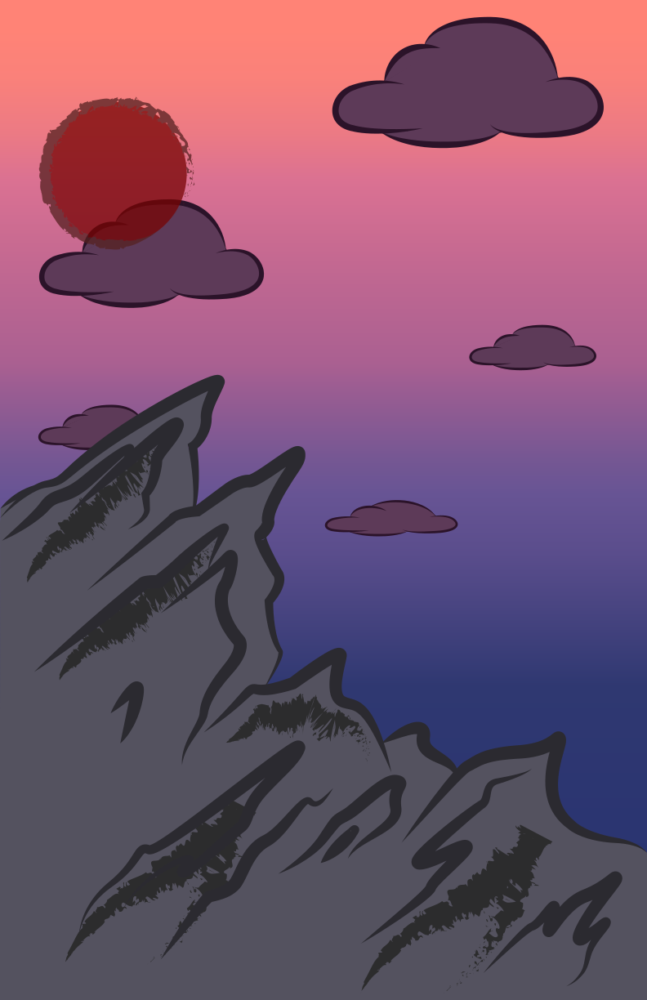

Visit
Badlands National Park
South Dakota
Established January 29th, 1939

43.8554° N
102.3397° W
242,756 acres
About The Park:
Badlands National Park is an American
national park located in South Dakota. Originally established on January 25th, 1939, Badlands was redesignated as a National Park on November 10th, 1978. This large, beautiful park is well known
for its thousands of miles of layered rock formations and steep canyons. Close to one million people come to visit the park each year to witness its beautiful formations and travel throughout it.
With thousands of acres of land, the Badlands is home to a variety of different animals, like bison, prarie dogs, and bighorn sheep. Along with them, the park is the one site where the black-footed ferret was reintroduced into the wild, an animal that is one of the most endangered mammals in the world today. Roughly 64,144 acres is protected and strictly designated as a “wilderness area” to help preserve the variety of animals living here.
Curious about what to do?
Here’s a short list of just a few of the many activities you can do at the Badlands. From hiking the rocky formations to watching the beautiful sunset, the possibilities are endless
in this beautiful park.
Hiking
Camping
Backpacking
Horseback Riding
Bicycling